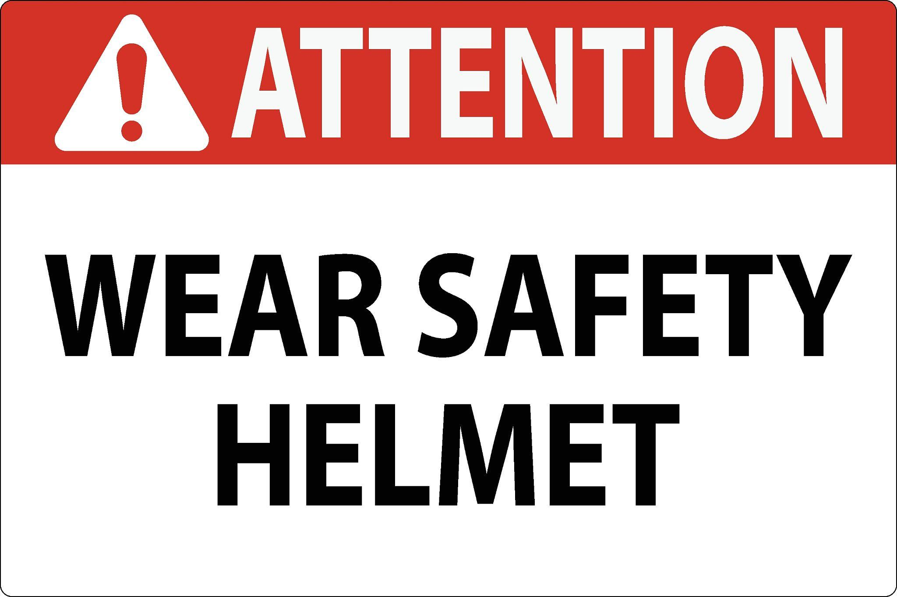
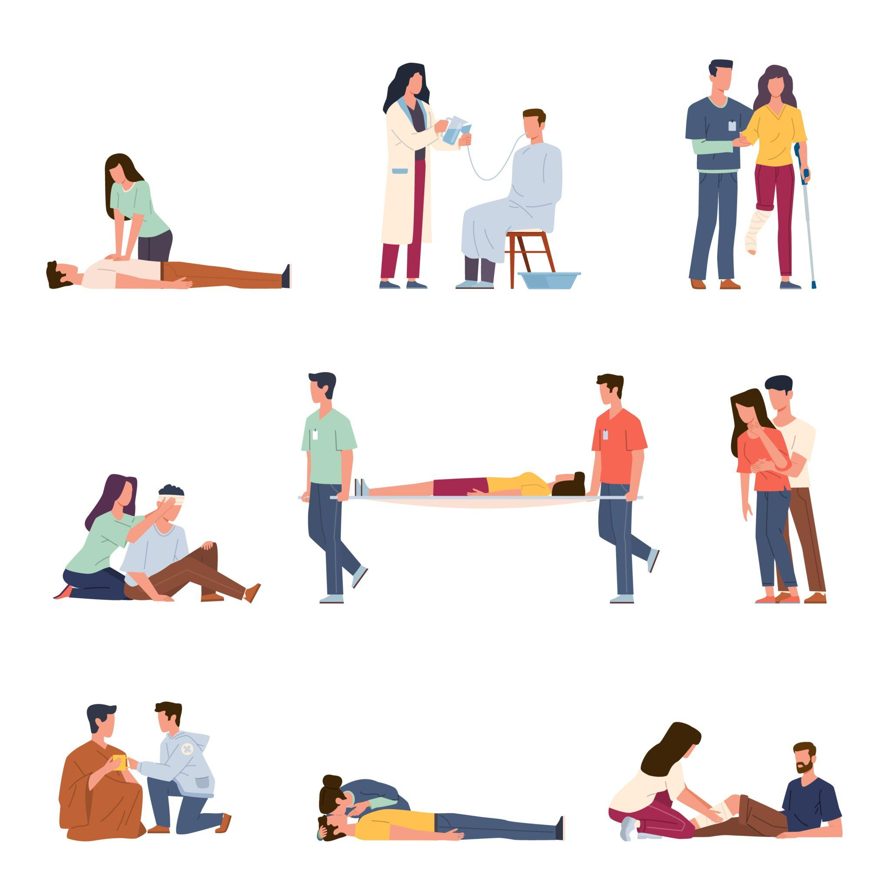
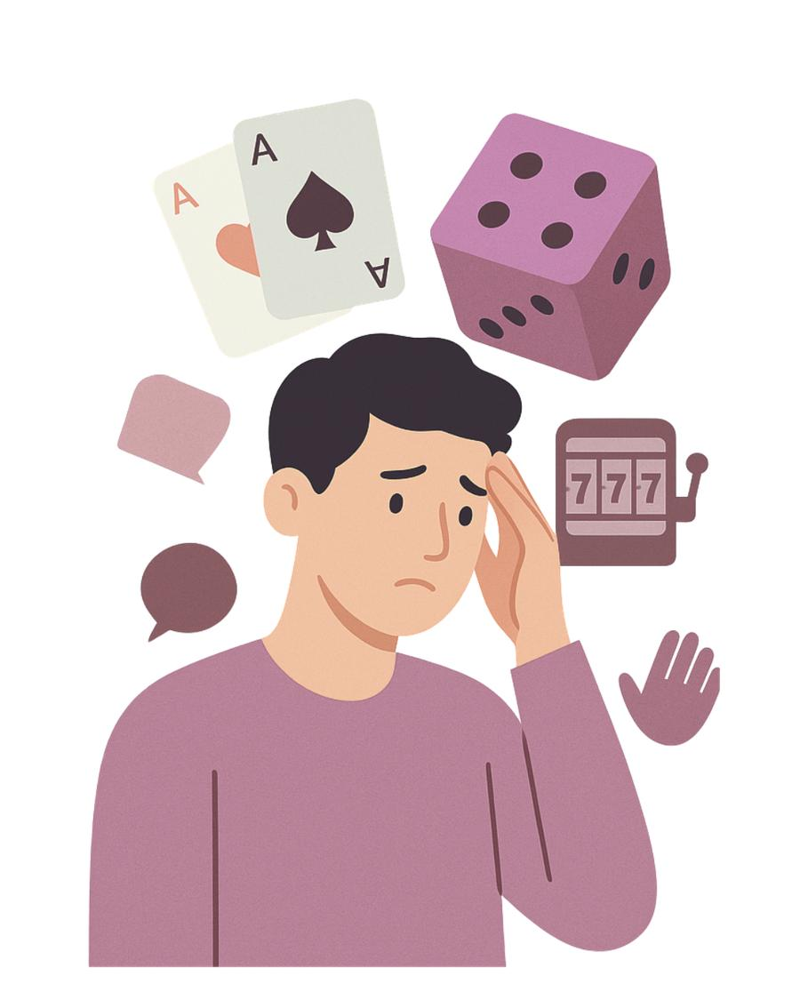
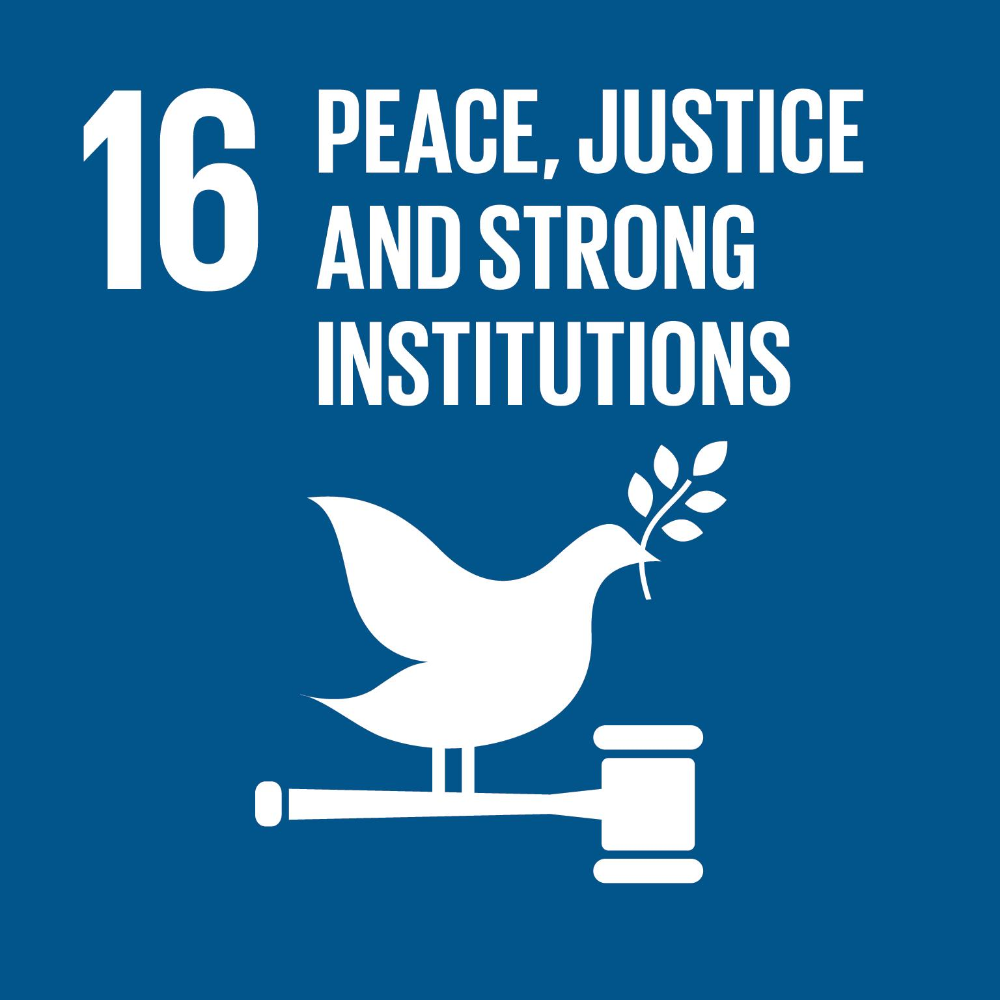

Portfolio Maturità - Informatica | FSL, Educazione Civica, crescita personale
Inizia il percorsoFirma digitale e pagamenti digitali: strumenti che garantiscono sicurezza, autenticità e validità legale dei documenti online.
GDPR e privacy: regolamento europeo che protegge i dati personali e definisce come devono essere gestite le informazioni degli utenti.
Big Data e sicurezza: gestione di grandi quantità di dati e protezione contro accessi non autorizzati e attacchi informatici.

Sicurezza sul lavoro: norme e procedure per prevenire incidenti e garantire ambienti lavorativi sicuri.

Primo soccorso: interventi base per aiutare una persona in caso di emergenza e ridurre i rischi immediati.

"Il banco vince sempre": progetto contro il gioco d'azzardo che sensibilizza sui rischi economici e sociali della dipendenza.
Cittadinanza attiva: il cittadino partecipa alla vita sociale e politica rispettando le regole e contribuendo al bene comune.

Goal 16 dell'Agenda 2030: promuove pace, giustizia e istituzioni forti per una società più equa e sicura.